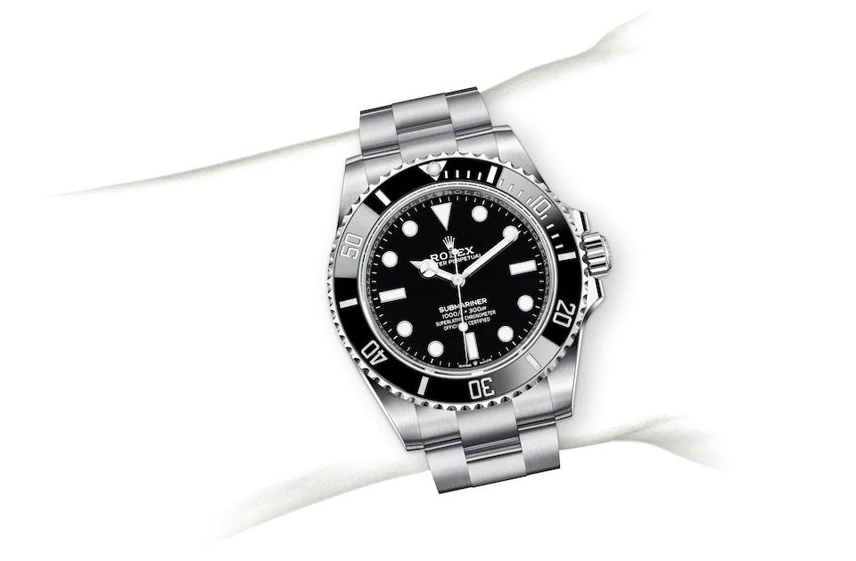
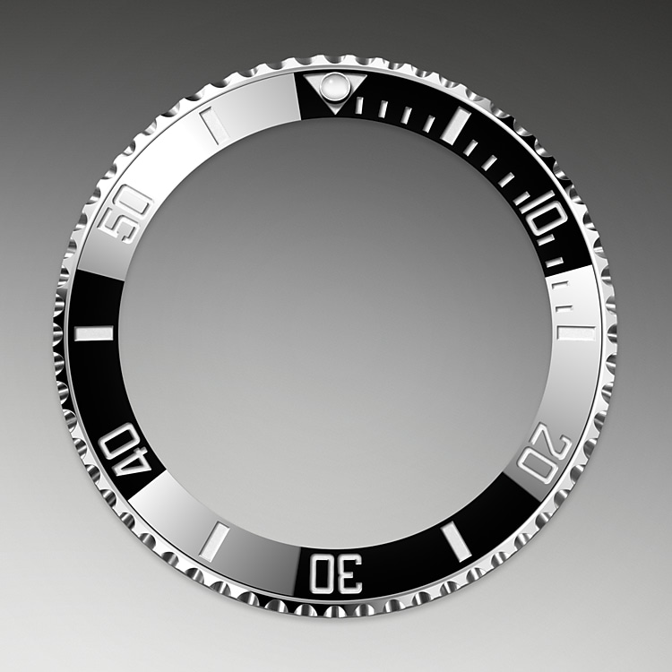
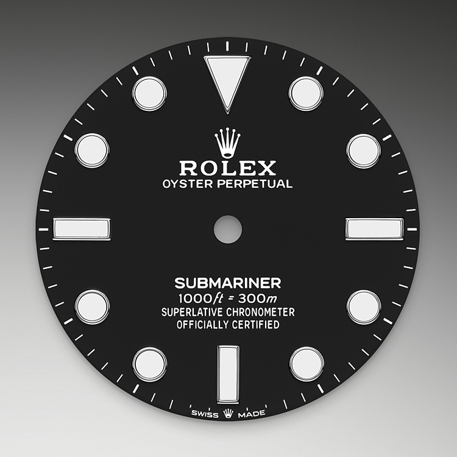

ROLEX



Al suo lancio nel 1953, il Submariner è il primo orologio da polso subacqueo impermeabile fino a 100 metri di profondità.
Nel corso degli anni si è evoluto tecnicamente, e la sua impermeabilità è stata aumentata fino a 300 metri.
Caratteristiche
- CASSA:
Oyster, 41 mm, acciaio Oystersteel
- LUNETTA:
Girevole unidirezionale graduata 60 minuti, disco in ceramica Cerachrom antiscalfitture, numeri e graduazioni in platino
- IMPERMEABILITÀ:
Impermeabile fino a 300 metri
- CALIBRO:
3230, Manifattura Rolex